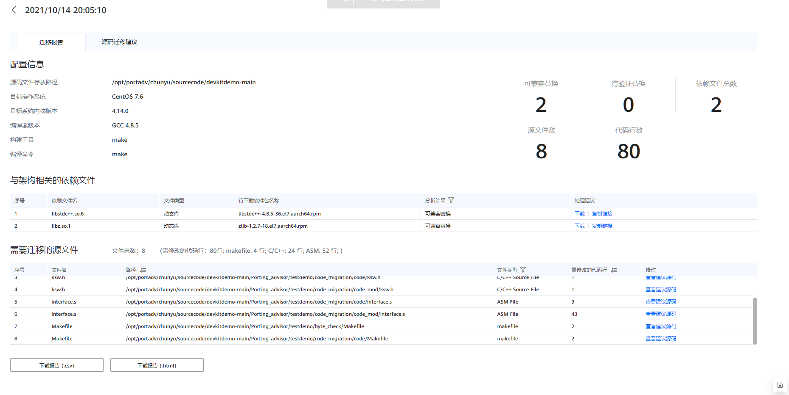

前提条件
已成功完成任务分析。

不同的目标操作系统支持的SO库不一样，所以迁移报告会有差异。
操作步骤
- 在页面左侧，选择“源码迁移”。
- 在历史报告的列表中，单击指定分析任务的报告名称。进入“迁移报告”界面。
- 任务分析完成后，单击“查看报告”可进入“迁移报告”界面。
- 分析报告的名称为生成报告的时间。
图1 迁移报告结果
 要显示页面右上角的“源码迁移人力”，需在“扫描参数配置”页面将“显示工作量评估结果”选为“是”。
表1 迁移报告结果参数说明 参数
说明
配置信息
显示源码文件存放路径、编译器版本、构建工具、编译命令、目标操作系统和目标系统内核版本。
与架构相关的依赖库文件
显示SO文件。
- 针对兼容鲲鹏平台的动态库、静态库文件、软件包、可执行文件、Jar包等，用户可以直接单击处理建议中的“下载”，下载鲲鹏平台可用的文件，然后进行替换，或者下载鲲鹏版本源码，直接编译。对于一些未开源的依赖文件，工具无法提供下载URL，请自行获取后进行替换。
- 针对鲲鹏平台兼容性未知的文件，请先在鲲鹏平台上验证。若不兼容，请联系供应方获取鲲鹏兼容版本，或获取源码并编译成鲲鹏兼容版本，或使用其他方案替代。
需要迁移的源文件
显示需要迁移的源文件总数和需要修改的代码行数，通过单击操作列“查看建议源码”可以快速进入对应的源码迁移建议页面。
文件类型包括C/C++ Source File，Fortran，makefile，Python，Go，Java，Scala以及ASM File，可通过筛选查看具体类型的文件。
文件所在的路径根据Unicode编码排序，需修改的代码行根据行数排序。